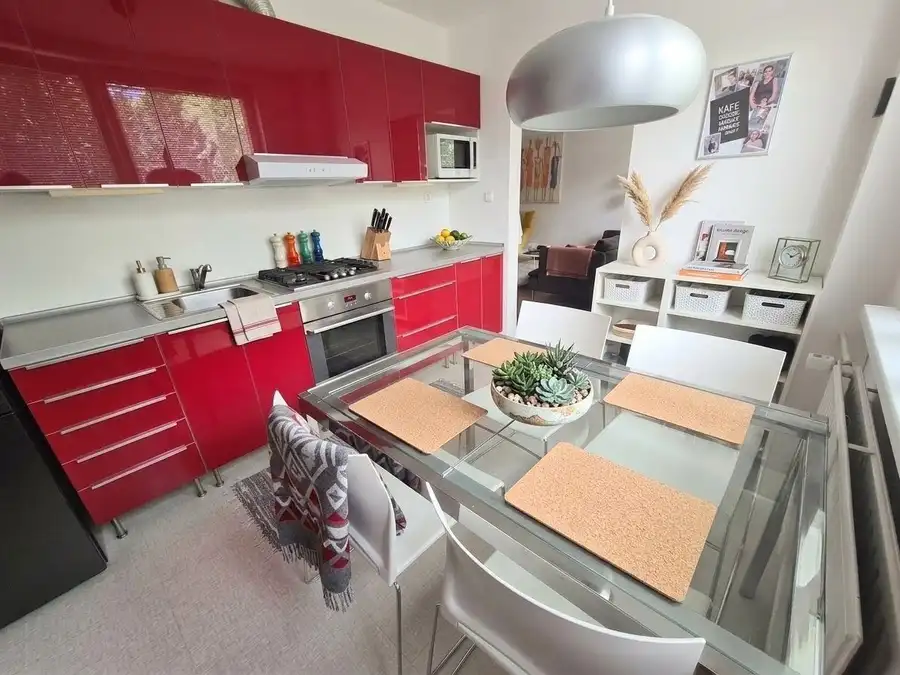
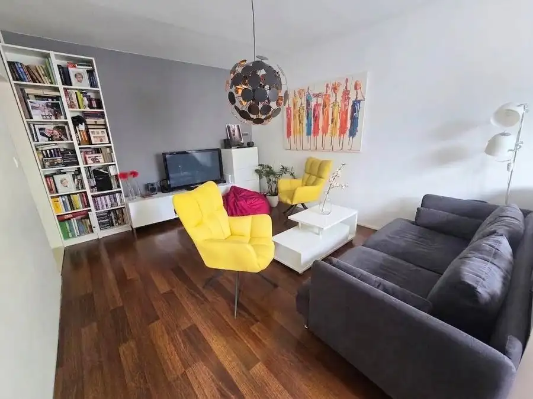
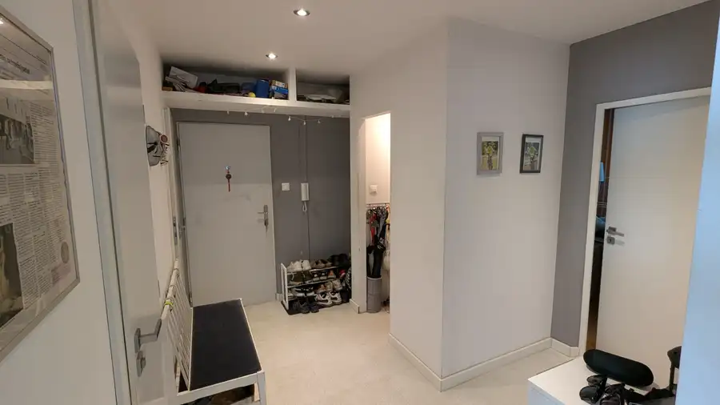
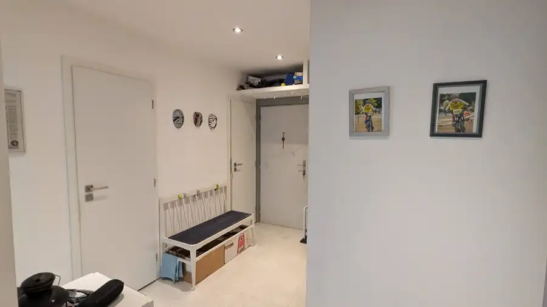
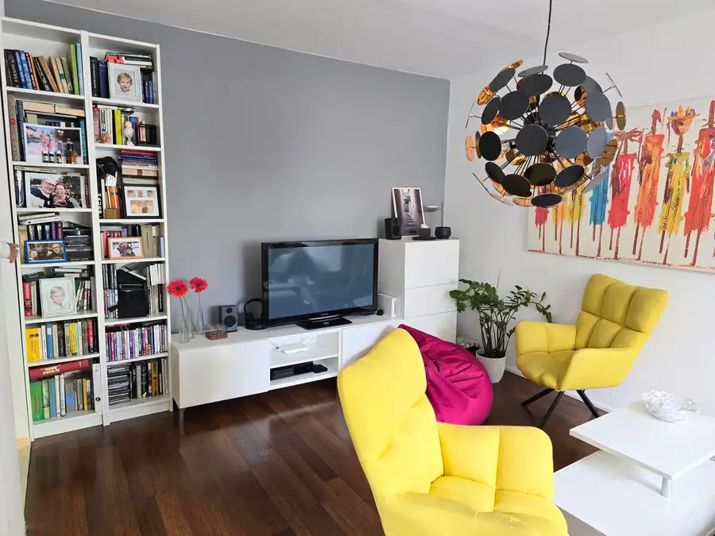

Priestranný a svetlý 3-izbový byt (96 m²) s 2 loggiami na Tulskej ulici – Vlčince 2
Žilina






- Dispozícia3-izbový
- Plocha88 m²
- Poschodie2. z 5
- StavKompletná rekonštrukcia
O nehnuteľnosti
REZERVOVANÉ !Hľadáte komfortné bývanie pre rodinu s vynikajúcou dostupnosťou? Ponúkam na predaj veľkorysý 3-izbový byt o výmere 88 m² s dvoma priestrannými loggiami (spolu 8 m²), situovaný na obľúbenom sídlisku Vlčince 2 na Tulskej ulici.Byt sa nachádza na 2. poschodí zatepleného bytového domu s novým výťahom. Pred 13 rokmi prešiel kompletne kvalitnou rekonštrukciou, pri ktorej bolo vyhotovené murované jadro a vymenené kompletné vodovodné aj kanalizačné rozvody, v jadre aj elektroinštalácia.Dispozícia bytu (nepriechodné izby): • Veľká, vzdušná vstupná chodba so samostatným šatníkom • Samostatné WC a samostatná kúpeľňa so sprchovacím kútom • Tri samostatné izby: spálňa, detská izba a obývacia izba • Kuchyňa so samostatným vstupom priamo z obývacej izby • Dve samostatné loggie prístupné z izieb • Veľký pivničný priestor ( pivničná kobka 5 m2 )Technické a prevádzkové parametre: * Orientácia: Severovýchod – Juhozápad (svetelný byt počas celého dňa) * Správca: OSBD Žilina * Mesačné náklady: Správca 280 € ( 4 osoby, Elektrina 38 €, Plyn 7 € )Lokalita a občianska vybavenosť:Lokalita Vlčince 2 patrí medzi najvyhľadávanejšie časti Žiliny. * Občianska vybavenosť na dosah: V pešej dostupnosti máte úplne všetko – od klientskeho centra, kaviarní a potravín až po školy, polikliniku a novo-vybudované športové a detské ihriska. * Príroda a oddych: Blízkosť Lesoparku Chrasť a Vodného diela Žilina robí z tejto lokality magnet pre rodiny s deťmi a aktívnych ľudí.Súhrn hlavných bonusov bytu: • Kompletná rekonštrukcia bez nutnosti veľkých investícií: Murované jadro a vymenené rozvody vám ušetria čas aj desaťtisíce eur za najťažšie stavebné práce. • Nízke náklady a výborný správca: Správcovstvo pod OSBD Žilina a zateplený dom s novým výťahom garantujú bezproblémový chod a rozumné mesačné výdavky. •Výborná výmera: Bytov s výmerou 88 m² je na trhu pomerne málo, väčšina 3-izbových bytov má okolo 65–75 m². Priestor vášho bytu je preto veľkým plusom pre väčšiu rodinu. • Kombinácia 2 loggií: Dve loggie (spolu 8 m²) sú v Žiline mimoriadne žiadaný „luxus, ktorý radikálne zvyšuje atraktivitu ponuky. • Priestranná pivnica ( 5 m2 )Cena: 224 000 €Pri rýchlom a serióznom konaní dohoda možná .V prípade záujmu o obhliadku ma neváhajte kontaktovať na tel. čísle: +421 905 206 838 alebo e-mailom na: robert.maliar@gmail.com
Parametre
- Cena vrátane energií
- Nie
- Druh
- 3 izbový byt
- Dátum zverejnenia
- 02. 09. 2026
- Energetický certifikát budovy
- nie je
- Podlažie
- 2
- Počet nadzemných podlaží
- 5
- Rok výstavby
- 1981
- Stav nehnuteľnosti
- Kompletná rekonštrukcia
- Telekomunikácie
- Internet, Telefón
- Typ
- Predaj
- Typ konštrukcie
- Panelová
- Vykurovanie
- Ústredné
- Úžitková plocha
- 88 m²